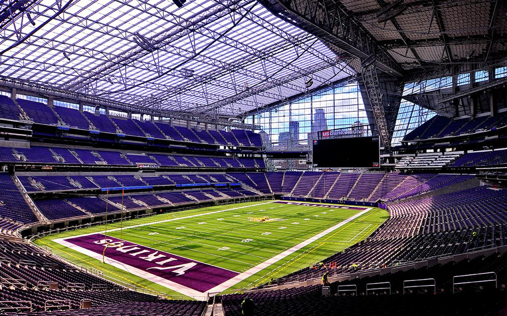

Stadium
The construction started in 2014 and the project was completed in just over two and a half years, six weeks ahead of schedule. Construction of the stadium estimated 3.8 million work hours and created over 8,000 construction jobs, with as many as roughly 1,500 workers on-site at one time. U.S. Bank Stadium is not just a location, but an epicenter of excitement, opportunity, and Minnesota pride. The Vikings are an important part of our proud heritage and the relationship between the Vikings and the citizens of Minnesota runs deep. But the stadium is not just the home of the Minnesota Vikings, it’s a facility that hosts major national and international events that create economic, fiscal and social benefits to the region.